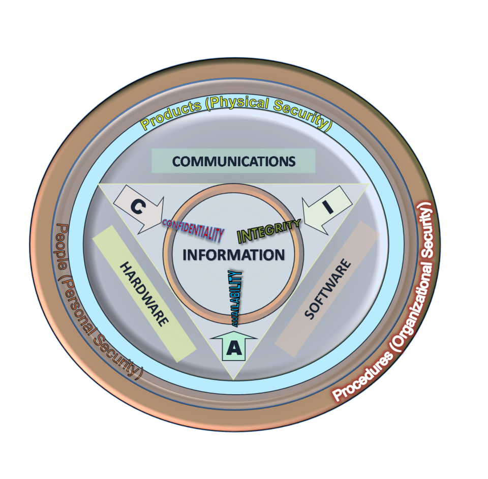

Cybersecurity is the practice of protecting systems and information from unwanted access, change, disruption, or loss. Good security is not one product or setting: it is a set of safeguards matched to the people, information, and systems involved.

1. The CIA triad
The CIA triad is a simple model for security objectives:
- Confidentiality: information is available only to authorized people and systems.
- Integrity: information and systems remain accurate and are changed only in authorized ways.
- Availability: authorized users can access services and data when needed.
These goals can compete. Strong access restrictions may improve confidentiality but make legitimate access harder. A good design balances all three for the situation.
2. Threats and vulnerabilities
A threat is a potential cause of harm, such as a phishing campaign, equipment failure, or accidental deletion. A vulnerability is a weakness that could be exploited or triggered, such as unpatched software, excessive permissions, or missing backups. A control is a safeguard that reduces the chance or impact of harm.
Threats can be intentional or accidental, human or environmental. Security planning should consider ordinary mistakes and failures as well as deliberate attacks.
3. Risk and prioritization
Risk describes the possibility of harm and its consequences. A useful first pass considers what could happen, how likely or plausible it is, and how severe the impact would be. Some teams use likelihood × impact as a qualitative or quantitative aid, but a score is only as good as its assumptions.
Prioritize risks to important assets, consider existing safeguards, and write down uncertainty. A low-probability event with severe impact may deserve attention; a frequent minor issue may also accumulate significant cost. Risk decisions should be revisited as systems and circumstances change.
Risk ratings help people compare and discuss priorities. They do not predict the future precisely, and different organizations may use different scales.
4. Cryptography
Encryption transforms readable information (plaintext) into ciphertext that should be unreadable without the key. Symmetric encryption uses a shared secret key; public-key cryptography uses related public and private keys. Key protection and correct implementation are essential.
Hashing produces a fixed-size digest used to detect changes or support password storage. A hash is not encryption and cannot simply be decrypted. Password storage should use purpose-built, slow password-hashing schemes with a unique salt—not a fast general-purpose hash alone.
Digital signatures can help verify that data was signed by the holder of a private key and has not changed since signing. Certificates help bind public keys to identities. Cryptography protects specific properties; it cannot compensate for stolen keys, compromised devices, or trusting the wrong identity.
5. Identity and access management (IAM)
Identity and access management covers how identities are created, authenticated, authorized, reviewed, and removed. Use unique accounts, multifactor authentication for important access, and least privilege. Grant access based on role and need, then review it when responsibilities change.
Authentication verifies identity; authorization checks permitted actions; accounting or auditing records relevant activity. Strong account recovery and prompt deprovisioning are part of the lifecycle, not afterthoughts.
6. Security controls
Controls can be grouped in two helpful ways. By purpose: preventive controls try to stop an event, detective controls help discover it, and corrective controls help contain or recover. By form: controls can be administrative (policy and training), technical (access settings and encryption), or physical (locks and secure facilities).
Examples include software updates, multifactor authentication, backups, endpoint protections, staff procedures, and monitoring. Choose controls that address identified risks; verify that they work, and plan what happens when they fail.
7. Threat modeling
Threat modeling is a structured way to ask what you are protecting, from whom or what, through which paths, and with what safeguards. It can be useful even for a simple personal project.
- Describe the system and the information it handles.
- Identify valuable assets and trust boundaries.
- List realistic threats and likely failure or misuse scenarios.
- Assess impact and existing safeguards.
- Choose proportionate improvements and review them later.
For a small personal photo backup, assets include the photos and account credentials; threats might include device loss, account takeover, accidental deletion, or a failed drive. Different safeguards—device encryption, multifactor authentication, and a separate tested backup—address different risks.
Practice and recap
Choose a system you own or are responsible for, such as a personal laptop. Write down one important asset, two plausible threats, the impact of each, one existing safeguard, and one proportionate improvement. Keep personal or sensitive details out of public notes.
- Which part of the CIA triad is affected by accidental deletion?
- How are a threat and a vulnerability different?
- Why isn't encryption the same as hashing?
- Give one preventive, one detective, and one corrective control.
- What is the value of revisiting a threat model?
Free learning path and practice
Build a security foundation
- NIST Cybersecurity Framework 2.0 — a free way to learn how organizations describe and manage cybersecurity risk.
- MITRE ATT&CK — explore real-world adversary tactics and techniques; use it to inform defensive questions, not as a compliance checklist.
- Microsoft: STRIDE threat categories — a practical starting point for asking what could go wrong in a design.
Practice with training environments
- TryHackMe: Introduction to Cyber Security and Principles of Security — guided beginner rooms.
- HTB Academy catalogue — search for introductory information-security and risk-management modules; check current access requirements.
MITRE ATT&CK, STRIDE, and NIST CSF serve different purposes. The standards and compliance guide explains how to distinguish frameworks, laws, and audit requirements.